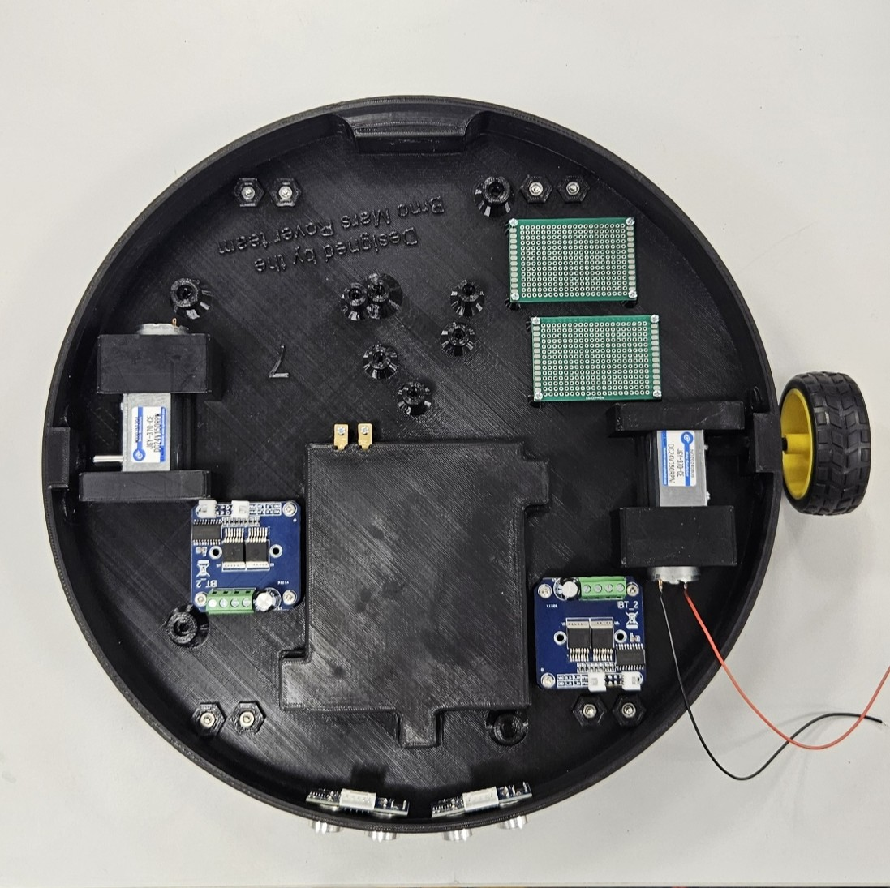
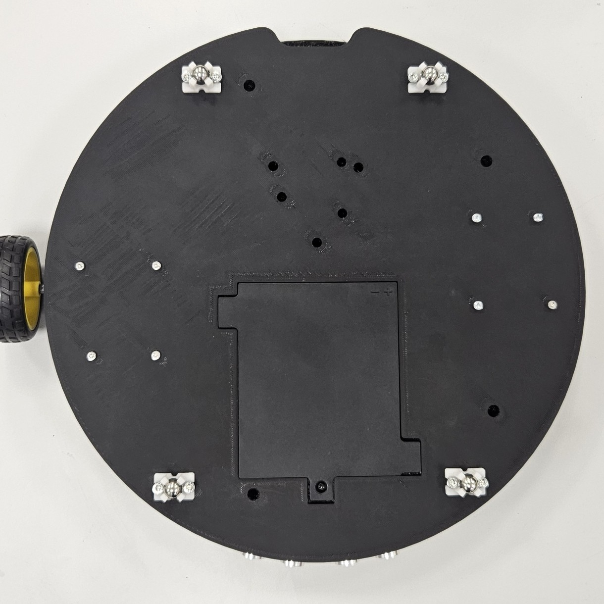
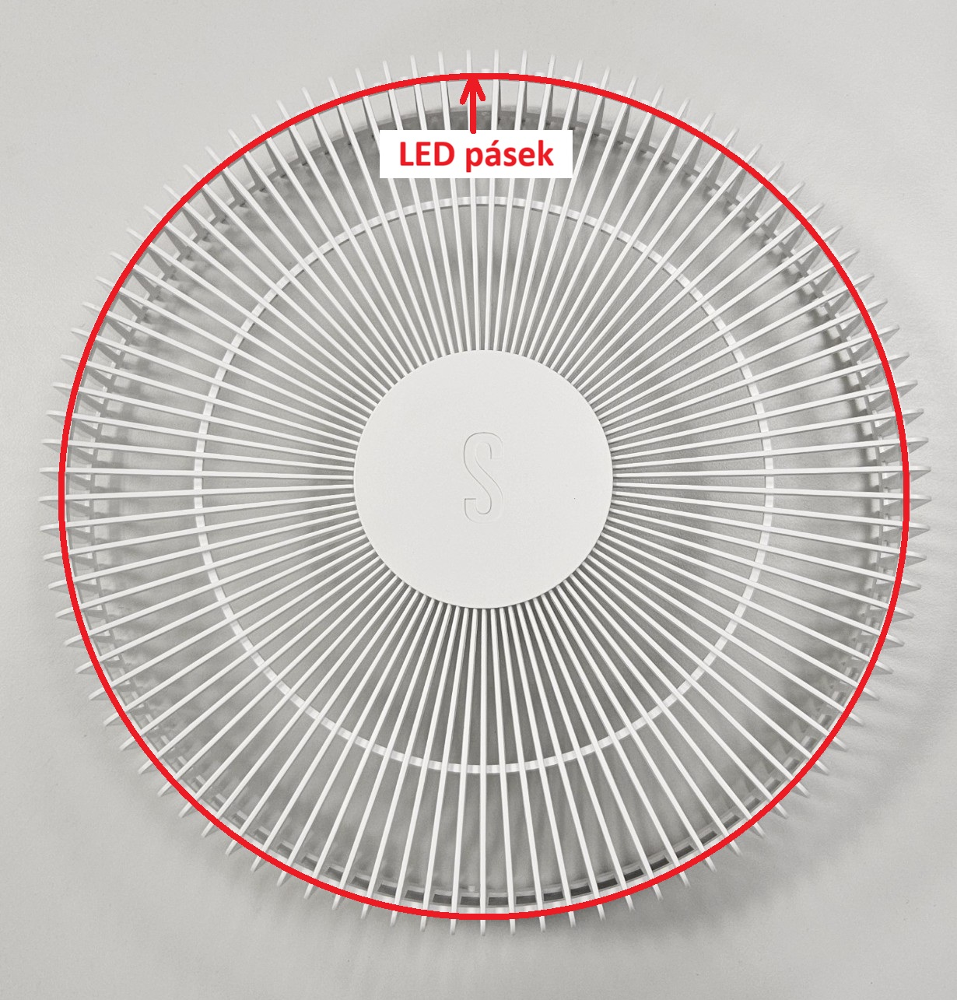
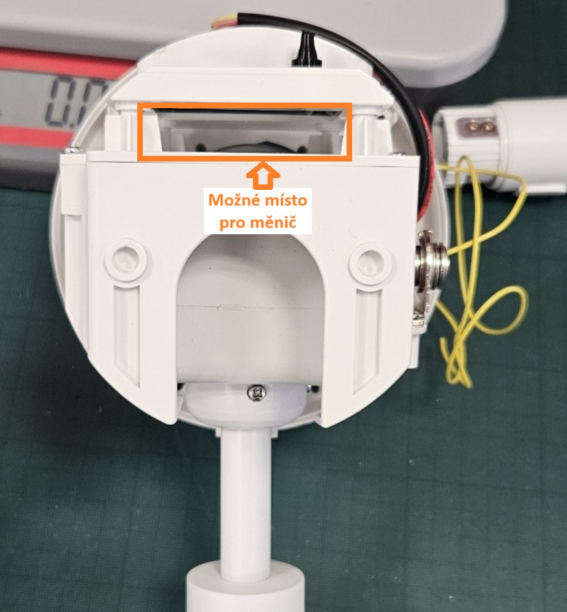

Podvozek
Podvozek je třeba správně propojit s ostatním komponenty, viz schéma. Konektory jednotlivých komponent jsou již připraveny a pro účely propojení s řídícím mikrokontrolerem jsou v podvozku dva univerzální plošné spoje.
Pohled zvrchu:

Pohled zespodu:
Ultrazvukové senzory jsou pouze vtlačeny do děr, zbytek komponentů drží šroubky. Svorky na motory jsou připěvněny pomocí šroubků ze spodní strany.
LED
LED pásek je třeba připevnit podél obvodu klece větráku (třeba pomocí utahovacích pásků)

Pro napájení LED pásku je třeba do hlavice umístit DC-DC měnič na konverzi z 24 V na 3.7 V.

Pro komunikaci s mikrokontrolerem je připraven žlutý drát vyvedený do hlavice a podstavce (drát je připojen pomocí konektorů uvnitř trubky konstrukce, takže je stále rozebíratelná)
Hlavice:
 Podstavec:
Podstavec: